DarWe: Pictures for "Lucky" Tournament
Your choice
So these are some pictures of my sister's cat Robin!
I'll leave it up to you to pick between them.
And if you think they suck, feel free to ditch them and pick something different entirely :)
The same goes for naming - I have some ideas (as can be seen in the <h4> above each picture), but am happy to go with whatever suits the team!
I'll leave it up to you to pick between them.
And if you think they suck, feel free to ditch them and pick something different entirely :)
The same goes for naming - I have some ideas (as can be seen in the <h4> above each picture), but am happy to go with whatever suits the team!
1: "Killer"
I really can't see if he's just sniffing the grass,
or if he's pondering whether or not to attack this dangerous bug ;-)
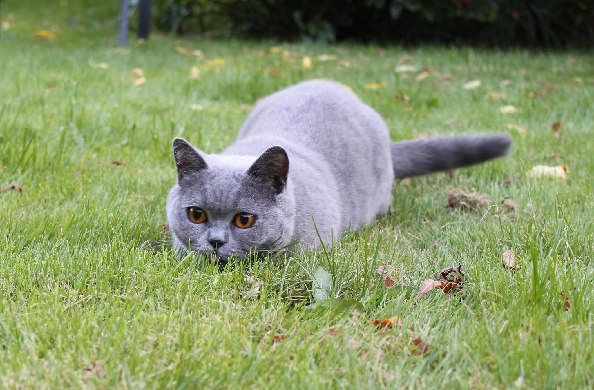
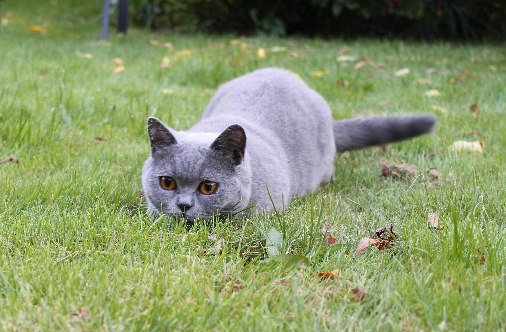
2: "Warranty Void"
Here it seems he's blown a fuse and gone all mental (a.k.a. Psychic)!
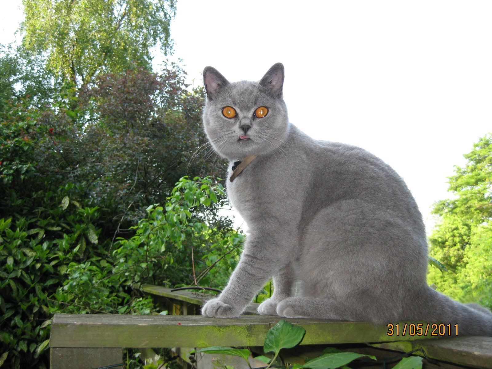
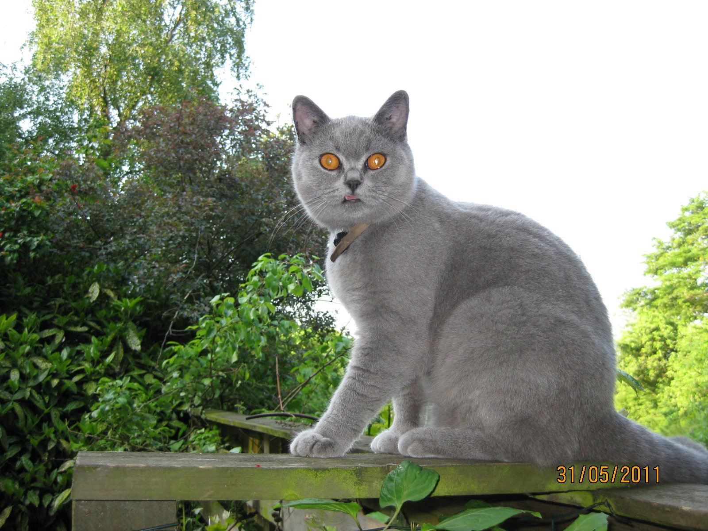
2.1: Edited
Note: If placed on black it's visible that
I didn't quite succeed in cleaning the area around the whiskers.
But I suppose it should be placed in front of a red-and-pink blinking, beating hearts background, so nobody will notice, lol!
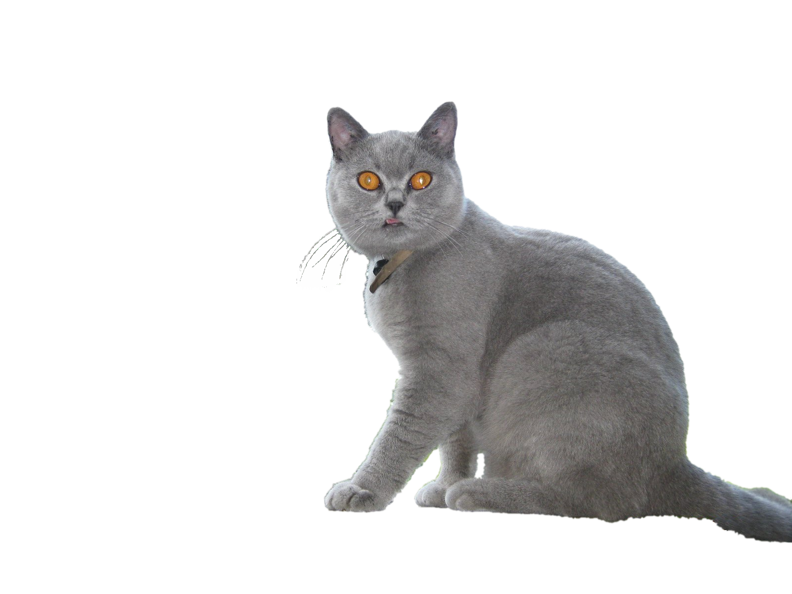
But I suppose it should be placed in front of a red-and-pink blinking, beating hearts background, so nobody will notice, lol!
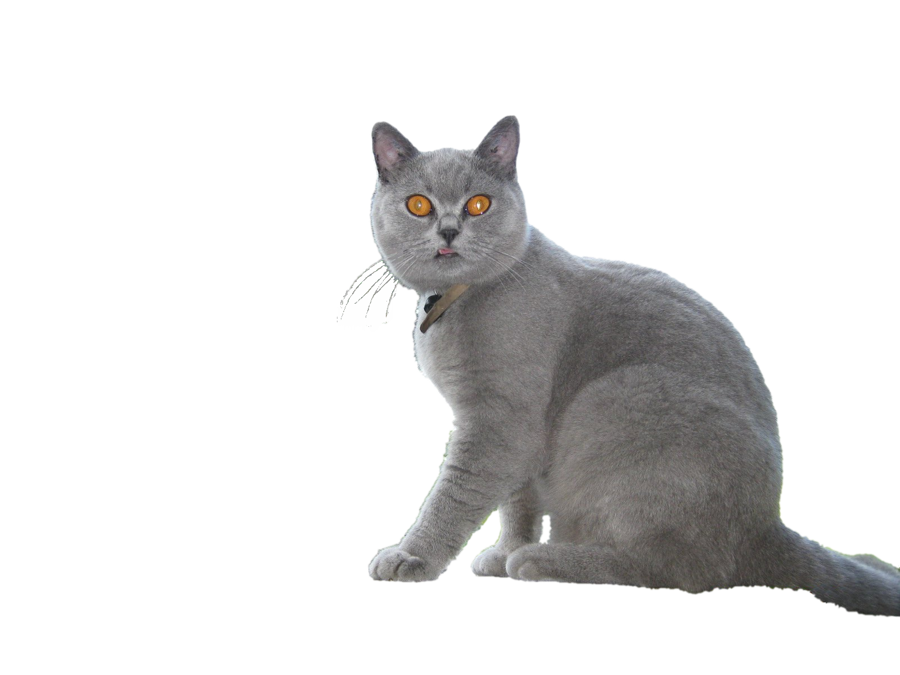
3: "Parity Error"
This is probably the cutest picture :)
It has Robin on the right and one of his siblings on
the left.
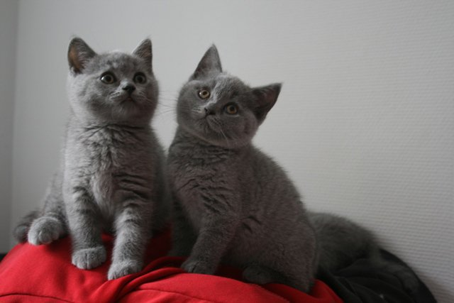
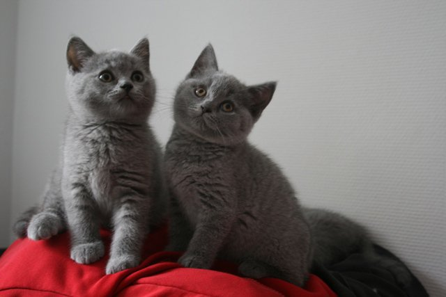
3.1: Edited
A very simple edit, adjusting the RGB values (+40% +35% +30%) - not sure if it works.
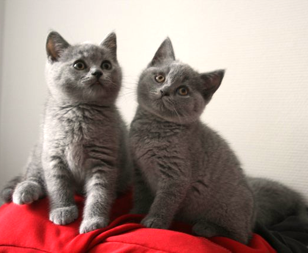
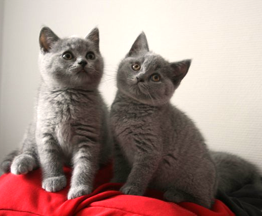
Can I have watermark?
If considered OK I was wondering whether it wouldn't be polite
towards my regular visitors
to have
an overlay/watermark of a miniature of my normal picture?
I prepared two versions:
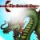
The result could be something like this:
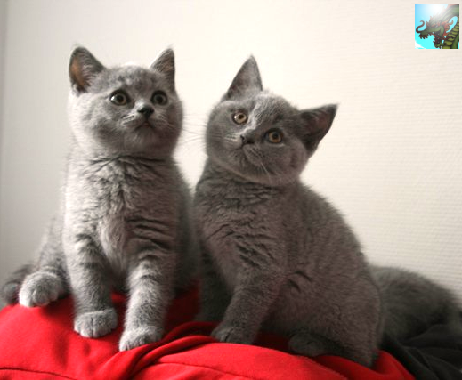
... but must of course have added the Seventh Day watermark as well.
Oh! They could be gazing up at the Seventh Day watermark in awe! :D
I prepared two versions:
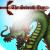
The result could be something like this:
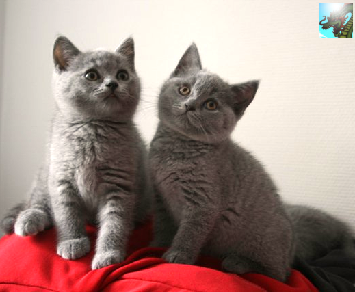
... but must of course have added the Seventh Day watermark as well.
Oh! They could be gazing up at the Seventh Day watermark in awe! :D
2012-09-27